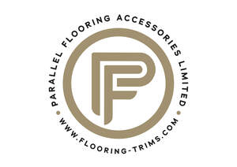

Trade Mark Journal No.2025/031 1 August 2025
UK00004239014 24 July 2025 (6,19)

- Class 6
- Aluminium profiles; Profiles of metal; Metal profiles; Metallic profiles; Tile floorings of metal; Extruded aluminium profiles; Decorative metal profiles; Metal flooring; Metal profiles for thermal insulation purposes; Aluminium profiles for use with information or display apparatus; Profile steel; Blocks (Metal -) for use in flooring construction; Metal floorings; Cladding panels of metal for roofing; Roofing tiles of metal; Metal roofing tiles; Roofing boards of metal.
- Class 19
- Wooden profiles; Laminate flooring; Flooring screeds; Wood tile flooring; Hardwood flooring; Wood flooring; Flooring underlays; Ceramic tiles for flooring of building; Flooring tiles (Non-metallic -); Vinyl flooring; Flooring underlay; Parquet flooring; Flooring (Parquet -); Ceramic tiles for flooring and lining; Hardwood decking boards; Laminated parquet flooring; Ceramic tiles for flooring and facing; Rubber flooring; Wood veneer parquet flooring; Parquet wood flooring; Parquet flooring of wood; Profiles for building construction (Non-metallic -); Bamboo flooring; Roofing boards [of wood]; Fabric for underlayment of flooring; Parquet flooring of cork; Wooden flooring; Flooring (Non-metallic -); Flooring materials (Non-metallic -); Synthetic flooring materials or wall-claddings; Tile flooring, not of metal; Deck profiles, not of metal; Parquet flooring and parquet slabs; Flooring made of wood; Artificial wood flooring; Parquet flooring made of wood; Laminate flooring, not of metal; Ceramic tiles for covering floors; Tile floorings, not of metal; Cladding sheets of wood; Parquet flooring made of cork; Ceramic tiles for floors; Tiles of ceramic for floors; Hardwood boards; Ceramic tiles for external floors; Flooring underlay made of cork; Ceramic roofing tiles; Bituminous products in sheet form for waterproofing roof surfaces; Floor tiles of wood; Ceramic tiles for internal floors; Blocks (Non-metallic -) for use in flooring construction; Joinery products of timber for use in buildings; Bituminous products for roofing [other than in the nature of paints]; Veneer for floors; Slate roofing products; Soffit boards (Polyvinylchloride -); Tiles (Non-metallic -) for floors; Acoustic panels of wood for ceilings; Softwood decking boards; Wood sports floors; Glass roofing tiles; Non-metallic tiles for ceiling cladding; Acoustic panels of wood for walls; Roofing boards (Non-metallic -); Stone roofing tiles; Roofing tiles (Non-metallic -); Floor boards of wood; Floor boards [of wood]; Timber laminates; Non-metal roofing tiles; Paver tiles; Wood laminates; Ceiling boards of wood; Floor boards of non-metallic materials; Stucco tiles; Wood moldings; Panel mouldings of non-metallic materials; Timber mouldings; Roofing underlayment; Cladding panels (Non-metallic -) for walls.
Parallel Flooring Accessories Ltd